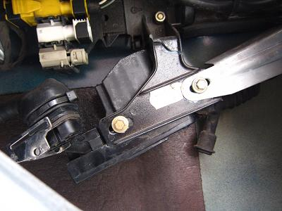
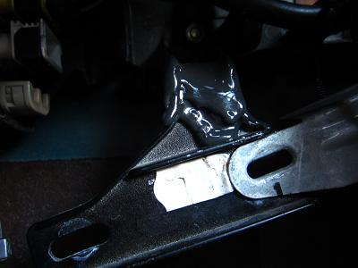

 アクチュエーターを支えているステーが割れていた＿|￣|〇 ここはキーシリンダーと一体になっているうえに、部品は生産中止になっている（汗 ドリルで穴を空けてタイラップで固定しようと思ったが、それだとまた割れてしまいそうだ。 ドアノブ周りの金属は割れやすいのだろうか。 他に案は無いか工具箱をあさると・・・ |
 クイックウェルドを見つけた！ ２液のエポキシ接着剤だが、溶接に匹敵する強度を出せるらしい。 硬化後はねじ切りもできるらしいが、以前に原付の修理に使った感じだと強度はそこまでの物ではない・・・ ヤスリで足付けと脱脂を行いクイックウェルドをたっぷり塗っていく。厚みをもたせるのがポイントだ。 このまま数時間放置すれば終了。 硬化した頃合に見に行くとガチガチにくっついていた。とりあえずこれでいけそうだ。 気になって反対側のステーも見てみるとヒビが入っていたので補修しておいた。 内張りを外した際にはドアロックリンケージ部分に注油し、各所の負担を少なくしておくのが良さそうだ。 ２０数年も経てば思わぬ所が壊れてくる。 ドイツ車とはいえ、２０年３０万キロぐらいが限界なのではと最近感じている。 でもＥ３４降りませんよ！（笑
|